Chapter-8
烟波江南·与时光一起，在此终老
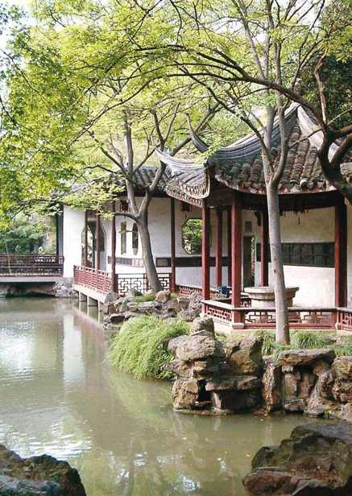
江苏
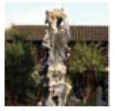
Jiangsu·吴越余韵
春天的江南，风是轻的，云是淡淡的，街前的杨柳依依，房后的油菜花灿烂。在这个时候来江苏，看花赏柳，渡船过桥，纵使不是故人，在桥上擦肩而过，也能萌生一种回眸一笑的情怀。春天的江苏，充满了故事……
太湖
Tai Lake
尘 世 情 怀
吴越之地，自古多情。比如范蠡那为爱舍身，抛却名利，与心爱的人泛舟于湖的情怀，让太湖的水一刹那也变得幽邃起来……
太湖在江苏南部的无锡市，临接浙江，面积达2338平方千米，是中国的第三大淡水湖，而且此湖中山水尽多。黄山之所以有72山峰，那是因为它原本是山，而太湖中的72峰却让你不得不惊奇。太湖八百里，湖中大小岛屿有48个，连同沿湖的山峰和半岛，人们称为72峰。或许太湖的72峰没有黄山的奇绝，也没有黄山山峰挺拔、高大，但它们或山水交融，百态千姿；或碧草繁花，掩映着小桥流水人家；或清纯瑰丽，诉说着天下奇异；或端庄典雅，透着浓浓的诗情，构成了山外有山、湖中有湖的天然图画。
行走于太湖鼋头渚，别有一番情味。青山绿水中，长春桥、澄澜堂、飞云阁点缀其间，古旧的廊檐旁，百花盛开，杨柳依依。
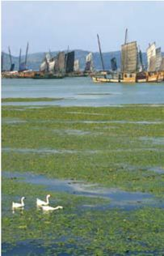
太湖泛舟
太湖的美，还在夕照。在万顷的柔波之上，一轮血红的残阳，徐徐在地平线上落下，天地间瞬时仿佛绚烂起来，那些金黄色的光，柔和地附在桥、廊、湖面上，那样的雄奇，却又那样的瑰丽，让人不禁心生敬畏。湖上的日落如此迷人，便想湖上的月景也是可爱的吧。遥想当年范蠡、西施月夜泛舟于此，亦能感受那“如此烟波如此夜，居然著我一扁舟”的感叹吧。
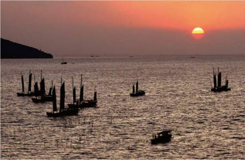
太湖夕照，渔帆点点，韵味悠悠。
观过太湖的美景，大吃一顿是必不可少的，寻一家湖边小店，吃上一顿真正的船菜，一次旅行便完满了。太湖盛产三白，即银鱼、白虾、白缌鱼，其中最有名的便是太湖白虾了。传说此虾虾壳极薄，通体透明，晶莹如玉，即使煮熟后也呈现罕有的洁白，吃到口中细嫩异常，鲜美无比。
太湖就是如此一个美丽的地方，虽然它没有西湖的精致、优雅，却有着独有的魅力。无论是茫茫的湖水，还是甜美的湖菜，都容易让人想起一种悠闲的生活。抛却繁忙的工作，与心爱的人，泛舟于湖上，相携看鼋头精雅，夕阳坠波……世间还有比这更美的事吗？
太湖珍珠
太湖除了湖美，水美，人美，船菜美，还有珍珠美。太湖地区盛产人工淡水珍珠，据说颗颗晶莹滚圆，色泽纯净，在国际上享有“太湖珍珠天下第一”的美誉。清代的慈禧太后也曾赞誉道：“东球南珠，不如太湖淡水珍珠。”可见其珍珠之好。如果你有时间去太湖，不妨也看看珍珠吧。
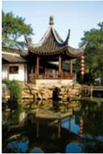
著名的拙政园一角
苏州园林
Classical Gardens in Suzhou
古 今 芳 华 意
苏州，幽幽古镇的老街，郁郁葱葱的香樟，白墙黛瓦的平凡小居，散发着悠悠的韵味，更别提雕梁的画栋，致巧的园林……
都说“江南园林甲天下，苏州园林甲江南”，如果真到苏州，见识了这里的园林，才知道什么叫做精致幽雅。如果说北京的园林透着的是一股宏大、严整、堂皇的气息，那么苏州的园林则是小巧、精致、自由的集合体。
或许是苏州小桥流水的生活太过柔情，使苏州园林到处弥漫着一种诗意。无论是亭台轩榭的布局、假山池沼的配合，还是花草树木的映衬、近景远景的层次，无论站在哪个点上，都有着“如在画图中”的实感。
拙政园内，亭台水榭，对于现代人来说，当然显得优雅异常。
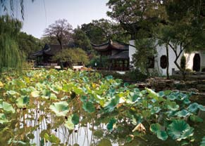
苏州的园林大多建于明清时期，繁盛时曾有200余处，如今保存尚好的有60余处，其中以拙政园、留园、网师园和环秀山庄为杰出代表。拙政园这座明代园林，为明代弘治进士、御史王献臣弃官回乡后，在唐代陆龟蒙宅地和元代大弘寺旧址处拓建而成。在这里，无论你是凭栏倚望，还是开窗遐想，拙政园展现在你面前的，都是一幅幅的如诗如幻的“国画”。即使是离园有好几里的宝塔，也能被设计者借入园中，让观望它的人产生“庭院深深，深几许”的错觉。
留园坐落在苏州阊门外，是苏州园林中景致分布比较密集的园林，而且不仅如此，据说留园中布局的巧妙，为诸园所莫及。这里假山池沼相映，亭台轩榭回转，其间花草树木点缀，虽有移步换景之妙，但仍少了曾经的那份淡然。
如果说拙政园和留园还带着大家园林的气派，那么网师园就是苏州园林小巧、精致的典范。这座隐藏在苏州药门带城桥南阔家头巷中的小院，是水的天下，主人曾取“渔隐之义”，称为“网师园”。网师园以石分区，以水为中心，主园中全用黄石，而其他庭院用湖石，不相混杂。漫步于回环的廊庑之下，看着山水错落，环池亭阁的瞬时美景，生出一种诗意来。据说，来网师园看最美的风景，不是穿行于其中，而是寻一处幽静的角落，或坐，或站，片刻之后，花影移墙，峰峦当窗，风景与你刚刚所看到的便大不相同。这亦是网师园中风景之一奇吧。
其实，苏州是一个处处散发着灵气与古朴气息的城市，行走于各园林之中，典雅、古朴之气扑面而来，仿佛一首精巧而韵味十足的小诗，等你细细品味……
假山、碧水、阁榭，苏州园林自有一段江南的雅丽温婉。
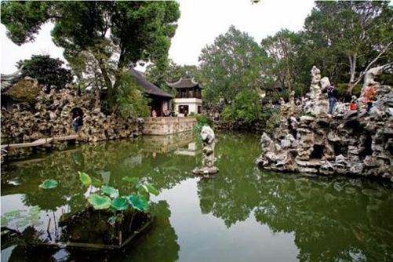
姑苏城的湖光山色 Jiangsu
苏州是古典优雅的，温润如玉的，却很难见到山。这是苏州的遗憾，假如没有穹窿山，这种遗憾将不是姑苏的优雅能替代的，也不是苏州城内那弯弯绕绕的碧水可以弥补的。
相传，在夏代有一位很有名望的谋臣叫胥，他很有才学，天文地理无不精通。当时洪水泛滥，他便帮着大禹治水，深受舜帝的敬重。制服了洪水后，舜帝将吴地封给了他。从此，吴中便有了“姑胥”之称。年代久了，“姑胥”在吴侬软语中便逐渐演变成了“姑苏”。
苏州是古典优雅的，温润如玉的，却很难见到山。这是苏州的遗憾，假如没有穹窿山，这种遗憾将不是姑苏的优雅能替代的，也不是苏州城内那弯弯绕绕的碧水可以弥补的。因为没有山的城市，便少了一种慰藉。其实，穹窿山虽名为山，并没有其他山峰的高峻挺拔，只是山上藏龙卧虎，古寺悠悠，别有一番风景。传说，这里曾是孙武隐居写作《孙子兵法》的地方，多年以后，这里依然散发着一种温润的气息。
寒山寺虽名为寒山，却并不是山，只是透着一股清冷之气的寺院。穿过枫桥的石板小巷，抬头便可见绿树掩映着碧瓦黄墙的寒山寺。当年一首“姑苏城外寒山寺，夜半钟声到客船”的忧愁，使得寒山寺的钟声千载流传，寒山古刹也因此名扬天下。寒山寺始建于六朝时期，原名为“妙利普明塔院”，传说到唐代贞观年间，名僧寒山和拾得曾自天台山来此住持，遂改名为“寒山寺”。
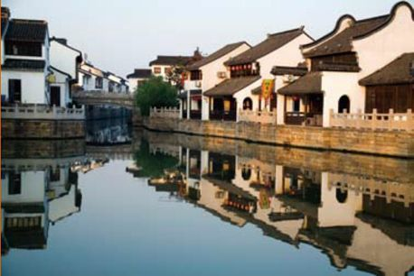
水畔人家
苏州的豪气在虎丘。大文豪苏东坡曾说过“到苏州而不游虎丘，乃憾事也”，可见虎丘之吸引人。其实虎丘之所以有豪气，是因为这里埋藏了吴王阖闾和他的宝剑。相传，吴王阖闾死后，他的儿子夫差便将他葬在了虎丘之地，因此，才有了如今别有洞天的虎丘剑池。
寒山寺
“姑苏城外寒山寺”——这几乎是使小寺成名的唯一原因。
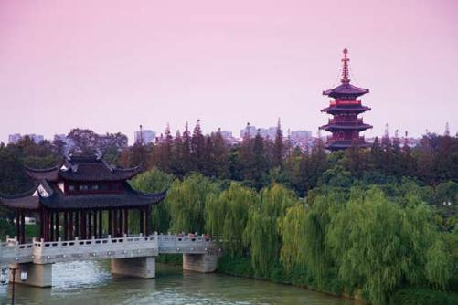
剑池是一潭绿水，池边悬崖壁立，巨石叠嶂，中间有一条飞瀑，落入剑池中。或许是剑气所致吧，剑池的水并不清澈，若非瀑布激荡，以及涌泉，人们定以为是一片死水。而潭中鲤鱼纠缠，倒反证了“水至清则无鱼”的老话。悬崖的岩壁上，有历代文人墨客的题咏，而高约数尺的红色篆字“剑池”，仿佛如蛇般逶迤，据说是元代书法家周伯琦所书。
虎丘之地，除了闻名天下的剑池外，还有虎丘茶。虎丘又名海涌，传说此地之泉连着深海，人们取来泡茶，果然清香怡人。不管这种说法是否真实，但虎丘茶中的茉莉花却是清香的。虎丘的茉莉花长在剑池旁，和唐时吴中名妓真娘有莫大的渊源。据说从前茉莉花是没有香气的，真娘死后，芳魂附于茉莉花上，才有了四溢的幽芬。虎丘人为纪念真娘，用茉莉制成了茶叶，还将其称做“香魂茶”。
当然，苏州的湖光山色因有了吴侬软语的苏州人而生动起来。无论是在城中弯弯曲曲的小河边，还是在古韵悠悠的寒山上，抑或在奇幻诡异的剑池旁，都能听见那纯正的苏腔吴调。那一声软柔的低语，仿佛优美的乐曲，被揉捏得一波三折，余音袅袅，让这个温婉的苏州顿时变得多情起来。
“虎丘”和“剑池”巨大的题字。
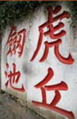
扬州
Yangzhou
烟 雨 濛 濛
印象中，扬州是一个飘满脂粉气的小城。这里的脂粉气，吸引了无数风雅的文人骚客不远千里而来，并在此留下了流传千古的诗词歌赋。而儿女情长，吴侬软语也成就了一段段名闻古今的佳话。
对许多人来说，扬州就像一个梦，一个被唐诗宋词中浸染得无比曼妙的梦，一个被许多传说逸闻渲染得如痴如醉的梦。“烟花三月下扬州”，迷的烟雨，撑着油布花伞的玲珑女子，美丽、安静的湖水构成了扬州自然的风景画。一首《扬州慢》曾道尽了扬州的烟雨，而仙女庙里上错花轿的扬州女子，依然向世人诉说着扬州的传奇。
五亭桥边鲜花盛开，杨柳依依。
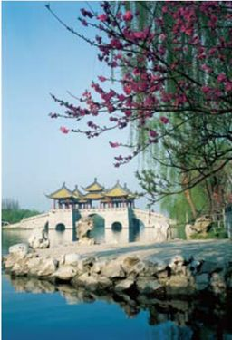
这个曾经叫“广陵”的地方，自古就笼罩在风流才子、浪漫佳人的光环下，与人们保持着若隐若离的距离。然而走进它，你才发现它是一个小小的、温馨可爱的城市，在古朴的风韵中，散发着一种漫不经心的韵味。田间山野中，是连绵不断的金灿灿的油菜，城市的大街小巷里，没有鳞次栉比的高楼大厦，满眼所见的皆是看似古老的建筑，虽没有飘飞的柳絮，却也如初夏时待放的一朵莲花，摇曳着别样的神韵。
扬州的美离不开瘦西湖。你或许认为瘦西湖因为是小西湖的样子，因此得名吧。但事实上是因为瘦西湖是“借”西湖的一角形成的佳景。后清代钱塘诗人汪沆有一首：“垂杨不断接残芜，雁齿虹桥俨画图。也是销金一锅子，故应唤作瘦西湖。”瘦西湖由此得名，并蜚声中外。
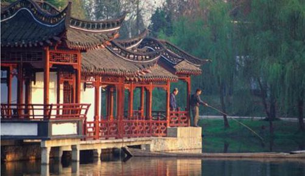
瘦西湖，人们在这里悠闲垂钓。
一年中，瘦西湖最美的时候，当于四时八节。风晨月夕，瘦西湖在山水环抱、绿树连荫之中，就似一条飞舞的彩绸环绕在“半点金山”周围。两岸林木扶疏，杨柳依依，间或点缀着楼台亭阁，不禁清爽怡人。月夜，乘着舟儿缓缓地划开细浪，在湖中飘然而行，站立舟头，远眺湖光，只见烟雨朦胧中隐现着金山的红墙绿瓦。耳边时而传来似有似无的扬州小调，迂回曲折间不停地撩拨着心绪，让人如痴如醉又回味无穷。岸边柳丝在朦胧中低低私语，难道是与鱼儿感叹这四月烟雨的美丽？
游扬州，三分看景，三分读史，三分吟诗，如果你还有一分心情，就留给扬州的小巷吧。这里的小巷不单单是小巷，小巷里还承载着一段段历史，一桩桩韵事，其中纵横交错的巷道，回环曲折，明明看似已经走到了尽头，不料行到近前，却又柳暗花明。扬州的小巷是庞杂的，闲行于这里，不必有什么目的地，只是信步向前，偶尔路遇一口古井，看着井沿上留下的岁月痕迹，不禁怀疑，时间已经凝固了。
扬州是一个传奇的地方，当你在小巷中穿行的时候，或许还会遇见一位美丽的女子，袅袅娜娜地从迎面走来，那缀着蓝花的连衣裙，带着淡淡的香气，在狭窄的小巷中侧身而过，留下了一袭似有似无的馨香，也留下了一丝若隐若现的念想……
大明寺
地处古城扬州城北蜀岗，依山面水，历史悠久。始建于南朝宋孝武帝刘骏大明年间，又称“栖灵寺”、“西寺”。曾在唐、宋年间分别毁于大火，后复建此寺。乾隆皇帝时，曾敕名为“法净寺”。1980年，鉴真大师的塑像从日本“回国探亲”后，复原名“大明寺”。
水乡的小镇 Jiangsu
很向往江南的水乡小镇，没有理由，单是想坐着乌篷船悠悠地穿过小桥，便令人兴奋半天。久居江南的人或许早已习惯了，如水墨重染般的乡村画景，早已失去了新鲜的意味，但他们却知道，那看似平凡而普通的小镇，就是有一种特别的味道，吸引着，召唤着……
江苏的小镇，周庄、同里、乌镇……一如江苏这个名字，带给了人们一种温婉而宁静的气息。还记得《似水流年》中，那扇厚重而乌黑的大门，推开后便走进了另一个世界，那里满是书香，尘封的繁华与静寂。江苏的小镇，就像隐藏在那扇大门后的书房，偶尔透出些许光亮，让你忍不住前去窥望。周庄像许多江南的小镇一样，坐着船才能体会到那里的味道。坐上一条乌篷船，轻轻地摇起船上的小桨，随船徜徉在周庄的大街小巷，不禁发出幸福的感叹。
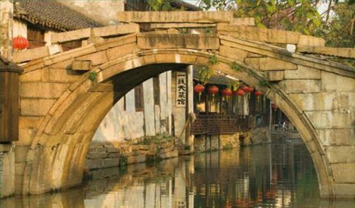
周庄小桥
同里离周庄不远，与周庄一样有着江南小镇的风韵。如果说周庄有着苍老的样貌，那么同里就显得亮堂多了，她是那种能让人产生长久驻留想法的地方。同里的水虽没有周庄的婀娜，但却多了一股悠长的韵味，划船而过，听着潺潺的水声，看着恍惚的水影，人会情不自禁地浸入其中。
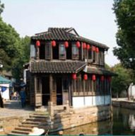
在水乡，水是永远也少不了的。它才是小镇的眼，小镇的灵秀所在。
水乡小镇的亭台屋宇
同里镇中因水成街，家家临水，于是桥便成了连接街道和宅院的枢纽。同里的桥中，最著名的要数紧紧相邻的“三桥”了，它们小巧玲珑，端庄典雅，静静地道尽了同里的魅力。据说，住在同里的人，无论什么喜事，都要热热闹闹地把这三座小桥走一遍，算是对将来生活最美好的祝愿。在同里随便走走，便能看见那些特别的建筑，崇本堂、嘉荫堂、耕乐堂，一座座沉静而古朴。轻步踏入，一股浓郁的人文气息扑面而来，但你却又明白地知道，那样的气息，只有在这乡水悠悠的同里，才能散发出如此迷人的光彩。
提起乌镇，很多人都会想起《似水年华》中的悠悠的情调，满满的情怀。乌镇并不大，但却有着千年的历史，只是不知如今路边千年老店的招牌，有几家是真的。镇的西头，有一座修真观，观前有一条游廊，游廊的每一根横梁上，都刻着浮雕，一幅幅望去，一部精彩的三国便展现在眼前：桃园结义、煮酒论英雄、五关斩将……一幅幅精巧而生动，不知不觉就给来这里的人，带来了一丝丝古意。
这就是江南的小镇吧，散发着温婉的风韵，从未茫然过，每到历史关头，就会挺身而出，就连石桥边闲坐的老汉，都对社会时事有着自己的评判。或许这也是江南小镇吸引人的原因……
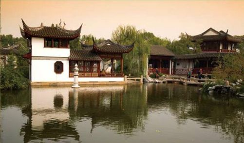
南京
Nanjing
烟 云 京 华
南京是一座厚重的城市，几乎在她的每个角落，都能找到历史的痕迹。比如秦淮河边，谁在唱《桃花扇》？一句“传得伤心临去语，年年寒食哭天涯”，道尽了她往日的繁华和今日的凄凉。
南京承载了太多的往事，从三国的激战，到南朝四代的繁盛，从后唐李煜的悲情，到太平天国的壮烈，从秦淮八艳的旖旎，到日军屠城的惨绝人寰……太多的时光在这里沉积，直到浓得化不开。然而，或许正是金陵的沉重，南京的繁华，还有旖旎的秦淮河，带给了人们太多的遐想，才引得人们不断来到这里，去寻找一个关于古城的旧梦，去寻找一段前世今生的情缘。
南京夫子庙景色
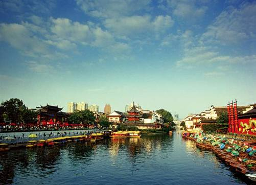
南京的故事，深藏在带着血的石路，深藏在小巷中那白墙灰瓦的人家，更深藏在十里秦淮。“烟笼寒水月笼沙，夜泊秦淮近酒家”，秦淮历经了数百年，依然灯红酒绿。一弯绿水，古旧的民居，咿咿呀呀的弹唱，仿佛时间从没有在这里行走过。夜晚，一串串红色的灯笼依然在临水的窗下摇曳着，留下一河的灯影，而那汉白玉的桥头，早已找不到风度翩翩的公子和手执团扇的佳人。
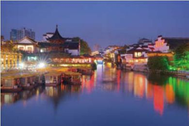
秦淮河夜景。似乎依然能从中听到悠悠歌声。
漫步于秦淮河边，尽管两岸建筑古色古香，但河边商铺颇为现代的叫卖声不绝于耳。当年的画舫早已被承载游人的小船代替，屋顶和门楣上的花灯也早已没了那丝古朴的气息，热闹而放纵的人群，也早将这条河留下的沉静的气质挥霍殆尽。
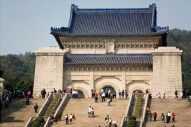
南京中山陵
走进乌衣巷的王谢古屋，却出奇的安静，或许这里是唯一留下古秦淮气息的地方了。不大的庭院，一如其他古居的灰瓦白墙，淡淡地透着一股古韵，墙角的几丛芭蕉，在清风下轻轻摇动，小院顿时诗情画意起来。曾经的老房子依然保持着原来的样子，曾经辉煌一时的家具，如今却都被罩在玻璃柜台里，在幽暗的房间中，散发着神秘的气息。漫步在这安静的宅院中，一种历史的沉重感，一种繁华落尽后波澜不惊的淡然，让心中的烦闷顿时消去了。谁能想到，在繁华而喧闹的秦淮河，还有这样一个隐秘的角落，在诉说着曾经的辉煌呢？
长时间留恋于这个小院，不忍离去，抛却现世的烦恼与忧愁，不禁问自己：就像墙角的芭蕉一样，静静地守望不好么？庭院里响起的悠然的古琴声，那是守护这里的年轻人的心。这个小小的院落在琴声的滋润下，渐渐模糊了，就像一幅水乡古镇的工笔画，到处晕染着一种悠悠的情怀。
这才是真正的秦淮吧，那样淡然镇定！或许这才是当年真正的金陵，如今真实的南京？而城中小巷的喧嚷，河边人们的喧闹，只不过是秦淮的浮金，在时光的流走中，渐渐褪去那喧闹的本色，只留下墙角芭蕉般的淡定……
上海
Shanghai·小资情怀
不知道是什么时候，很多人开始向往一种慵懒的小资生活，它也成为都市时尚男女的一种生活态度。说起小资，就自然地想起上海，似乎上海已经成为小资情调的一种表征。
夜上海
One Night In Shanghai
流 光 溢 彩
怀旧似乎已经成了上海的一种情绪，淡淡的，透着雨打梧桐时的哀伤。但当夜幕降临，这座繁忙而压抑的城市，便会释放出疯狂的风采。
白天的上海清新、安静，适合人修心养性；夜晚的上海却是繁华的、疯狂的，可以尽情放纵的。
外滩的夜景是上海最美丽的地方。在这里，你唯一能做的就是用心去感受它——外滩的夜色，像是情人明亮的眼睛，多情而迷离，像海上刮起的微风，清纯而柔和，一瞬间，怦然心动。
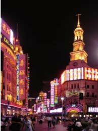
南京路步行街夜景
夜晚漫步于淮海路绚烂的灯光下，路上依然是匆匆来往的人群，依然能听见南腔北调在这里的凝聚。远处的，近处的，所见之处都是明亮的灯火，红红绿绿，一如白日的生活。城中的人们早已习惯了这种夜晚的繁华与喧闹了吧，终于可以放下白日的伪装与繁忙，在夜色的掩护下，奔向自己一直想去的地方。于是，马路边，广场上，还有那些掩映在灯光后的店铺、商场，便多了一群年轻的身影，伴着久违的爽朗的笑，回荡在上海的夜空之上。
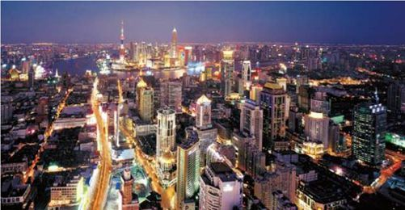
夜上海，灯火琉璃，灿灿不眠。
金茂大厦裙楼的浦劲娱乐中心，是全城最新、最引人注目的夜间娱乐总会，它由东京先锋派设计公司Super Potato设计，两层楼高的舞池周围，环绕着内部透光的玻璃座，可以坐在这里欣赏来自洛杉矶的六人组合乐队MAXTEMPO的现场表演，也可以下场尽情热舞……
不管你是漫步于繁华的淮海路，看着周围来来往往的人群，低头怀念着平淡而充实的过去，还是躲于街角的酒吧，或品着爽口的啤酒，或随着年轻的韵律尽情舞蹈，夜晚的上海都能带给你一种疯狂的情绪。尽管时光荏苒，老上海的空气中，依然飘荡着那首经典的老歌：夜上海，夜上海，你是个不夜城……或许当一切沉淀在时光中，心灵随着流动的车轮，换了一个新天地，夜上海又将呈现出另一番流光溢彩的景象吧。
淮海路是与南京路齐名的商业街，是上海的风格、品位的象征。
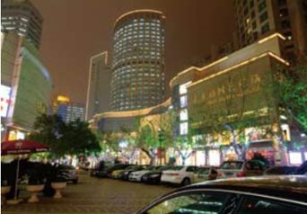
豫园
Yuyuan Garden
福 禄 玲 珑
从古至今，人们对幸福、财禄的追求从没停息过。它们已经成了人们对生活的一种习惯，对周围人的一种期盼和祝愿，而豫园就是承载着这样美好祝愿的一个地方。
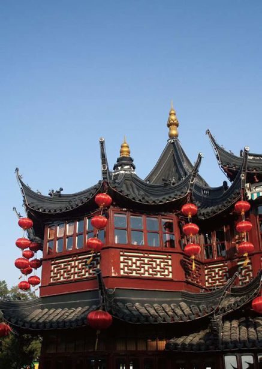
豫园湖心亭局部
豫园位于繁华热闹的上海老城厢东北隅，是一座闻名中外的私人园林。豫园的主人是潘允端，上海人，是明代时的四川布政使。为了使家中的双亲生活得愉悦，便在上海故居建造起一座园林。本着儒家“愉悦双亲，颐养天年”的思想，为此园命名为“豫园”。
豫园商业街
在豫园中，有一条商业街，汇集了全国各地的特色小吃。据说其中单是点心就有近50种式样，其中较有特点的有酒酿丸子、三丝眉毛酥、凤尾烧麦、如意糕、百果小方糕、八宝饭、鸽蛋圆子、开洋葱油面、重油酥饼等。
因为本着“福禄双全，颐养天年”的希望，所以豫园中亭、台、楼、阁，廊、檐、家具上，便都少不了“福”、“禄”的身影。那些代表“福”的蝙蝠或抱着圆润的寿桃，或展翅飞舞，好不热闹。而代表的“禄”的仙兽鹿，在豫园的路中则随处可见。
豫园的景色也堪称一绝。豫园是明清园林的精华，其中廊檐回转，花草分割巧妙，具有一步一景的奇妙。其中最有特色的便是龙墙了。龙墙其实是豫园的围墙，但因为雕着伏龙、穿龙、双龙戏珠、睡龙，而且五龙形态各异、栩栩如生地蜿蜒于白墙之上，得名为“龙墙”。或许曾经它一直是豫园显赫与富贵的象征吧，即便如今依然散发着雄霸一方的光彩。
来到豫园，不能不看玉玲珑，当然玉玲珑并不是一块玉，而是一块秀气玲珑的太湖石。此石高约3米，宽约1.5米，厚0.8米，是北宋年间徽宗的花石纲遗物。
相传玉玲珑刚刚搬进潘家时，潘家只知此石珍贵，并不知其贵在何处，打算随便摆在园中一角。然而建造园林的老石匠却知道此石的奥妙，一日潘家来园中查看，恰逢老石匠在石底放了一炉香，只见此石孔孔洞洞顿时香烟缭绕，烟雾密布四周；尔后，老石匠又从石顶倒下一壶水，只见此石顿时孔孔泉流，烟雾尽消。至此，潘家人才知此石有如此之奇妙。
如今，几百年过去了，玉玲珑依旧静静地立于豫园之中，但有多少人会知道这段美妙而又有趣的故事呢？谁又曾想起它所经历的繁华与烟云呢？
悠悠碧水中的豫园九曲桥。
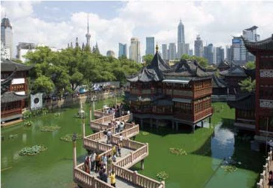
浙江
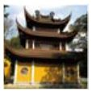
Zhejiang·繁华水乡
依河的老街，古朴的石板路，幽深的弄堂，凝重的台门，错落有致的翻轩骑楼，仿佛这就是浙江水乡的最直白的描述。但那些隐藏在骨子里，最悠闲、最富贵的气质，却怎么也无法遮住。这就是浙江啊，这个古朴而宁静的地方，自有一种繁华。
普陀山
Mount Putuo
第 一 人 间 清 净 地
这里佛音袅袅，海浪声声，在阳光的照耀下，周身仿佛被包围在一片温暖之中。
传说，最早的普陀山只是一座普通的山，渔人经常来这里打鱼。唐时，有一位叫慧锷的日本高僧有感于五台山上观音灵验，便从五台山请了一座观音像乘船归国。不料，船行至普陀山的莲花洋时，遭遇了风浪。慧锷数次乘船前行，都无法如愿，于是相信观音不肯东渡，便将圣像留在了潮音洞侧供奉。据说，此地观音非常灵验，有求必应，因此佛香大盛。鼎盛时期，全山共有大寺3座，佛庵88间，僧侣4000余人，被称做“震旦第一佛国”。
普陀山现有最古老的建筑多为宝塔。
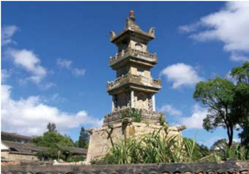
登普陀，必经莲花洋。有缘之人过莲花洋，赶上午潮，便能见到洋面波涛翻腾，状似千万朵莲花随风起伏，令人浮想联翩。当然如果遇到大风，这里波涛翻滚，则又是一番景象。
普陀山的佛节
由于普陀山是观音菩萨的道场，所以与观音有关的三个日子，便是普陀举行盛大佛会的日子。这三个日子分别是农历的二月十九、六月十九、九月十九。二月十九为观音菩萨诞生日，会有佛诞会；六月十九为菩萨得道日，也有佛会；九月十九则是菩萨涅槃日，是小香会。
普陀的胜处，在于佛光普照之中，更在那众多的观音显圣的传说中。到了普陀山，向东南行约300米，便是短姑道头。滩上有大小不一、形状各异的岩石，出没于海潮之中，而传说这些大小不一的岩石，便是观音当年送食所遗留下的垫脚石。当年曾有姑嫂两人发愿礼佛，几年后稍有积蓄，便凑资买了一艘船来普陀还愿。谁知船刚停泊在道头时，小姑“天癸”来潮，自以为不洁，便不敢下船入山。嫂子无奈，只好嘱咐她在船中等候，独自怅然进山拜佛。正午时候，潮水大涨，船与岸相隔，小姑饿得浑身无力，一个村妇在向潮水中扔了数块石头后，踩着石头到船中来，给小姑送了午饭。后来，嫂子进香回来，向小姑说起，刚才拜佛时，瞻仰莲座，发现观音大士的衣裾湿了一片，不知道是什么原因。小姑很惊愕，便说起中午时嫂子托人给送饭的事，两人才恍然明白，原来是观音大士所为。于是，两人一起又进山到观音面前叩拜了一番。因为嫂子进香前，曾埋怨小姑没有缘分拜见菩萨，人们便将这个码头称作“短姑道头”，即揭小姑短处的意思。而观音大士扔下的石块，也成了人们泊船时最好的码头。
佛说“一切福田，不离方寸；从心而觅，感无不通”，或许这正是普陀令人幸福的原因吧。
普陀山南海观音铜像
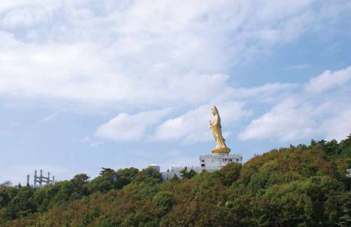
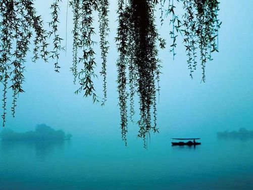
烟柳西湖，小船悠悠。这样的西湖，是人们想象中与梦想中的西湖。
西湖
West Lake
动 情 的 传 说
江南就像一幅画，语言无法描绘她的美丽，只有用心去感受江南浓妆淡抹总相宜的风情。西湖的美景就像三月天，有着雨如油，柳如烟的感觉，而西湖自古就是一个充满柔情的地方，每每想来，总有一种说不出的感觉。
杭州最美在西湖，朝阳半羞半怕似的从雷峰塔端露出笑脸，丝丝霞光将雾霭氤氤的断桥圆拱抹上了一片红唇。湖畔桂花淡淡的花香，湖面缭绕着的缥缈薄雾，拂面的微风和深情款款的柳条……都在向人们讲述着西子湖畔的美丽。在西湖的迷人风景里，有人在锻炼身体，有人在唱戏……让人忍不住艳羡杭州人有个如此好的去处的同时，也在感叹着他们对于西湖的装点。
西湖之美，在于夜游，感受到的又是另一番景色。灯光点点，游船来往如织，西湖边的石阶上，长凳上，到处可见温婉的西湖女子和清秀的江南男子谈情，读书。在星光和灯光的映射下，游船往来，涟漪圈圈，凉风习习，女子和男子的影子缠绵而多情，渐渐分不清哪个是女子的影子，哪个又是男子的，或许本来他们就是那断桥顶上的精魂……
西湖美景众多，而最吸引人的莫过于断桥——那个传说中动情的地方。当年那个日夜寻找未来的女子，在断桥之上与许仙相会、相知，即使在他最不相信自己的时候，也艰难地选择在断桥上原谅他。如今，断桥静静地半倚在湖边，说它美，不如说它暗藏着很多情愫，就像是等待情郎的姑娘。长年挥之不去的霭雾，就像姑娘那双清澈又迷惘的眼睛，猜不透的是女儿的情思绵绵，它不经意的娇羞，总是会让人望痴了去。
杭州的小吃
杭州的小吃，花式品种繁多，四季时鲜不同，便有不同的流行趋势。春季是各式春卷、鲜肉汤团、什锦八宝饭、清明的艾青团子或端午粽子的风行时期；炎炎夏日则是可品骨头粥、薄荷糕、水晶糕等各类糕点的大好机会；三秋湖蟹肥，各类蟹肉小吃的香味充斥着整个城市；寒冬腊月则为糯米麻糍、猪油玫瑰年糕。而杭州最有名的小吃街在何坊街和舟山东路。
断桥那端的白堤，满眼是桃红柳绿，带来了无限的美和嘘唏。那些树沿着断桥绵延伸向远方，一株嫣红，一株柳绿，放眼望去，犹如给白堤挂起了无数的珠串，慢慢地伸向白堤天际间……风儿舞着那柳枝般的腰，青翠欲滴的嫩苗，欲说又止的情，欲迎还拒的舞，直令人陶醉在微风中，陶醉在这片美丽的景致中……
如果说西湖的桥是传说中最动人的背景，那么西湖的水就如最美丽的女子，为这个充满传说的神奇之地，增添了几分温婉。当夏季炎炎，那片温婉的水域中，不知不觉露出了尖尖的荷叶，几日过后，一望无际的绿绿的荷叶与那亭亭玉立的美丽荷花，布满了湖面。那时，无论你走到哪里，都能闻到满湖的荷香。乘一艘小船，穿行于绿荷红莲之间，望着前方古朴典雅的廊、轩、亭、阁，与满眼绿云、荷香相映成趣，和风徐来，荷香与酒香四处飘逸，令人不饮亦醉。
西湖就是一个令人微醉的地方呵，临西湖，就像是面对一女子，虽然没有惊艳的容貌，却能让人过目不忘；面对西湖，又像是在口渴时，遇到一股清澈的山泉，温柔、平淡，却让人久久不能忘怀。
西湖灵隐寺，在飞来峰和北高峰之间。
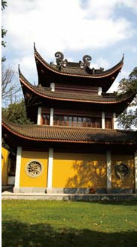
钱塘自古繁华杭州 Zhejiang
东南形胜，三吴都会，钱塘自古繁华。烟柳画桥，风帘翠幕，参差十万人家。云树绕堤沙，怒涛卷霜雪，天堑无涯。市列珠玑，户盈罗绮，竞豪奢。重湖叠清嘉，有三秋桂子，十里荷花……
——柳永《望海潮》
每一个城市都有一种感觉。北京是庄严与混合，西安带着一股沧桑，成都是一种天生的悠闲，大理有着绚烂与淡泊，而钱塘则是带着一种贵气和才气。“烟柳画桥”、“云树堤沙”，仿佛是最美的童话，却是杭州最真的描述。
钱塘的中心是杭州，这个曾经盛产才子、美女和故事的地方，如今已是传统和现代、自然和人文的完美结合。城市整洁而有序，人们淡然而悠闲……当你某天骑着单车，在这个城市里游荡时，难免会心头一动，产生身在苏黎世的感觉。俗语说“上有天堂，下有苏杭”，这话一点都不假，苏杭自古便是钟灵毓秀之地，所以才孕育了“江南忆，最忆是杭州”的留恋与表达。
杭州的美不仅在西湖的温婉与柔媚，还在于这个千年古城中带着悠悠古韵的青山和碧水。富春江是钱塘江的上游，江水清澈碧绿，两岸青山青翠秀丽，山间曾发生过“严陵问古”、“双塔凌云”、“子胥野渡”等故事，后人便在原来的地方建造了一些祠、庙，以示纪念，于是形成了如今山水间的名胜古迹。
新安江是钱塘江主流的一段，自古便有“奇山异水，天下独绝”的美誉。人们所知的唐代诗人，大部分都曾来过这个地方，并留下了“人行明镜中，鸟度屏风里”的名句。或许正是新安江的水，不论深浅，都清澈见底，不论春秋，也都皎洁如镜的特点，才吸引着人们来此吧。
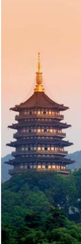
西湖边的雷峰塔
因为《新白娘子传奇》，雷峰塔成了人们耳熟能详的名字。
如果说两江的美景是沉静的、古朴的，那么千岛湖就是调皮的、生动的。千岛湖，一如其名，是一个有着数以千计小岛的湖泊。来到这里，放眼望去，湖中的小岛如玳瑁玑珠般，点点嵌在明净如镜的湖中。而其中形态各异，风姿绰约，与烟波浩渺的水面交相辉映，颇有“天光云影共徘徊”的意境。然而事实上，千岛湖却是名副其实的人工湖，是新安江水力发电站筑坝拦江蓄水而形成的。尽管如此，这里的碧水、绿岛、怪石、奇洞却成了千岛湖的四绝，尤其是这里的碧水，据说有一种甘甜如饴的味道，不禁感叹这里生活的繁华，就连那一湖的碧水，也要如此奢华。
杭州西湖的翠荷
来杭州，如果不游西湖，绝对是一件令人遗憾的事。
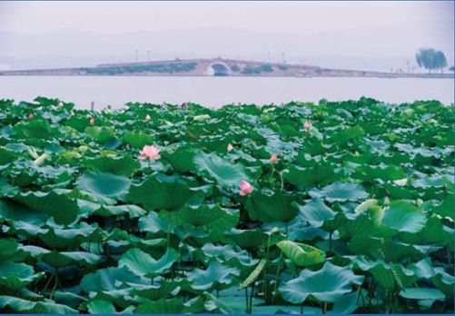
当然，在钱塘最能感受繁华的，还是在这里生生世世生活的人们。西湖边上林立的茶楼里，一曲评弹，一壶龙井，一袋瓜子，便是一天的消遣。他们这种喝茶方式，大概会被喝茶如牛饮，或是借茶谈商的人嘲笑了，那样悠闲的姿态，那样无谓的神情，岂是现代忙碌的人们所应有的？这样悠闲的一天，岂不是喝跑了所有的买卖？但杭州人却有着自己独特的看法，喝茶不就是图个色变空的无为境界么？
走在西湖边，看着杭州人或在雅致的茶舍，或在简约的茶座中，嗑着瓜子品着茶，你不得不承认，这是一个骨子里流淌着南宋贵族遗风的繁华地方。
夜色下的浙江嘉兴“月河历史街区”，旖旎迷人。
嘉兴
Jiaxing
远 去 的 水 乡
嘉兴没有难以担负的盛名，但却拥有其他江南小镇同样的民居、小桥和情怀……
在没去嘉兴之前，相信很多人都会认为，嘉兴只是一个南湖，其美丽不抵西湖，其声名不如乌镇、周庄。但等你真的走进嘉兴，你就会发现，嘉兴其实是一座美丽的水乡，一座座古朴的民居依河而立，粉墙淡瓦，清雅而没有矫揉造作之气。或许她没有杭州那座城市那么精致，也不如同里、周庄的民居那么密集，但她就是有一种气质，能带给人们一种意料之外的惊喜。
嘉兴南湖风光
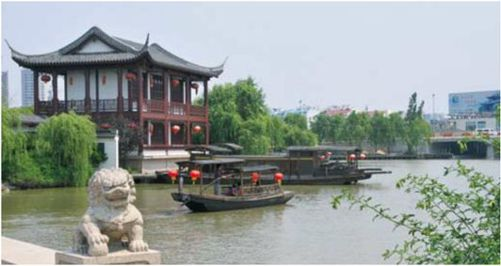
很多中国人最早听说嘉兴是在历史书上，那时嘉兴、南湖、船就像是一个标志，定格在中国所有少年的记忆中。而南湖其实不是一个湖，而是由形似交颈鸳鸯的东西两湖连成的。由于古时常有鸳鸯栖息于此，因此也名鸳鸯湖，是浙江的三大名湖之一。南湖的水与其他的水并没有差别，只是那一派烟雨迷蒙的景色，却迷倒了众多文人墨客。春天，湖畔的柔柳如烟般轻轻摇摆，伴着丝丝烟雨，不知多少人为之倾倒。
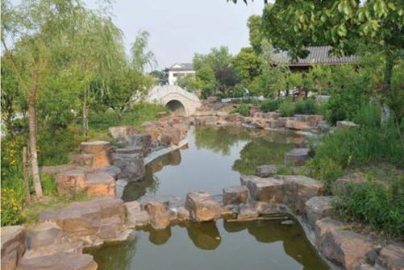
范蠡湖公园。相传范蠡在功成名就之后，与西施一起退隐江湖。而这样的公园，就散发着婀娜的气息。
乘一艘小船，来到湖心岛，著名的烟雨楼便赫立眼前。烟雨楼正楼高约20米，面积有640平方米，其中雕梁画栋，朱柱明窗，楼前悬着董必武所书的“烟雨楼”，具有一股非凡的气势。烟雨楼的名字，取自杜牧“南朝四百八十寺，多少楼台烟雨中”的诗句，自有一股清韵。
拾级而上，眼前的亭台阁榭、假山回廊，仿佛又将人带回《射雕英雄传》中，丘处机与江南七怪相约烟雨楼时的情境。湖畔柳如烟，楼前荷花曳，湿润润的空气中却透出一股香气。
在烟雨楼上观南湖别有一番情趣。当江南特有的细雨松松散散地散落在南湖上时，湖面上下烟雨朦胧，心中自会生出一股似惆怅、似喜悦、似等待、似茫然的情怀来，让人说不出道不明。而湖中接天莲叶无穷碧的幽香，伴随着湖面上飒飒的微风扑面而来，又让人有一种说不出的感慨，或许这也正是“微雨欲来，轻烟满湖，登楼远眺，苍茫迷蒙”的精髓吧。
站在曲栏围绕的短墙旁，凭栏而望，楼与倒影相依相偎，人影憧憧，楼亦朦胧，只有南湖的水还是一如既往的清澈，一如既往的寂静而漫长……
安徽
Anhui·古皖情深
一条小溪，一座村落，青青的瓦片，白白的墙，这里就是绝美的尘世——安徽。路口的树下，温一壶老酒，约上一群朋友，聊聊家常，回忆回忆人生的得失，神仙的日子也不过如此。
黄山
Mount Huangshan
巍 峨 秀 美
泰山的雄伟、华山的险峻、峨眉的秀丽，甚至于雁荡山的巧石，武夷山的蕴藉，在黄山，你都可以找得到……
黄山，聚集了人们对山的所有幻想，巍峨、神奇、俊秀、妩媚、阳刚，以至于几百年前便有人说过“五岳归来不看山，黄山归来不看岳”，可见黄山之奇。翻开散发着悠悠香气的唐宋诗篇，“丹崖夹石柱，菡萏金芙蓉”、“三十六峰高插天，瑶台琼宇贮神仙”的诗句扑面而来，让人不禁反问：黄山究竟有何等魅力，竟让千百年来的文人墨客对它如此钟情？然而，当你踏上黄山的土地，呼吸着空气中弥漫着丝丝的甜味，抚摸着变得润润的、爽爽的皮肤，问题则迎刃而解了。
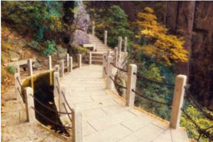
山中小路，曲径通幽处。
黄山是美的。它的美不仅在于山上的奇松、怪石，而是在于黄山是与徽州合在一起的。还没有登上黄山，只是在徽州的路上，穿过车窗，看见正冒着一缕缕炊烟的农舍，农舍前是绿意盎然的水田，而远方的黄山如黛，晨韵悠然。这一派田园风光就足以令人陶醉。
当银铅色的天空上开始飘起大片大片的雪花，伴着飒飒的微风，雪花便像北方春天的柳絮，漫天飞舞，然后缓缓而下。此时的黄山完全的隐藏在一片雪雾里，而诸峰的峰峦峭壁和深壑幽谷，也都那么洁白无瑕，那么悠然潇洒，让人不胜喜欢。
当然，黄山的雪景并不是时时都可以看到的，它需要机缘。传说农历新年左右是黄山下雪的最好时机。偶有缘分的人，在新雪纷纷时来到这里，就会看到奇妙的雾凇、雪凇、冰挂、雪帘，以及一个珊瑚盛开的冰雕玉砌的世界。但这种奇景是可遇不可求的，一如黄山上的传说。
黄山松自古以来就闻名于世。而那云雾笼罩中的青翠景象，更是如诗如画。
巍巍黄山。在这里，人可以感觉天地的伟岸与不朽。
黄山的雪景虽奇，但却不能让人震撼，真正让人震撼的是黄山的“变”，那不是依靠堆砌与媚俗而得来的喜悦，而是一种与生俱来、浑然天成的天赋与得天独厚的气质。最能体现黄山这种气质的，就是云海。
黄山自古就有“黄海”之称。一座山竟然以海为名，谁不说奇？然而，黄山真正的奇妙之处，就在于这里似海非海，山峰与云雾相幻化，意象万千，引发人的想象也更是万千。按照地理分布，黄山可分为莲花峰、天都峰以南、玉屏峰、狮子峰、始信峰以北5个“海域”。其中，玉屏峰的文殊台是观前海的最佳处，其间云围雾绕，高低沉浮，是用自然彩笔画出来的天地。而狮子峰顶和清凉台，不仅可以观看到瞬息万变的云海，还能观赏到曙日初照。据说，当太阳从诸峰上升起时，云的海洋顿时翻滚奔腾，太阳的金光浮在海洋之上，就像跳跃的金子，简直艳丽不可方物。
而黄山那块高达12米的飞天巨石，在云雾的幻海中时隐时现，仿佛真的从天外飞来般的，立在“空中”，无怪《红楼梦》要将它作为开篇剧首。
黄山游时间
黄山的旅游旺季是每年的3月中旬到11月中旬，但剩下的时间可能是黄山最美的时候，有“黄山最美季节”的美誉。黄山的冬季往往比较长，每年的10月下旬左右就可能下雪，通常12月至第二年的2月是雪最厚时期，也是赏雾凇、黄山雪景的最佳季节。
其实，在黄山中，峰石的实与云海的虚幻是最完美的配合。无论是飞来石的危险、惊奇，还是位于云谷寺皮篷路口的仙人指路，都在云海的浮沉中，显出一片烟水迷离的景色，是在诗中、画中才可见到的景色。
这就是黄山。它任何一个奇景，都可以模仿，都可以在其他名山大川中寻找到痕迹，只有它天然合一的气质与气魄是独有的，是任何一座其他的山想学也学不去的……
九华山
Mount Jiuhua
莲 花 佛 国
昔在九江上，遥望九华峰，天河挂绿水，秀出九芙蓉。我欲一挥手，谁人可相从？君为东道主，于此卧云松。
——李白《改九子山为九华山联句并序》
九华山中，九峰如芙蓉，“芙蓉”中，古刹林立，真身佛祖殿中，香烟缭绕，于是人们称它为“莲花佛国”。
九华山的中心，是九华街，寺庙也主要集中在这里。在九华山上众多的寺院中，化城寺是九华山历史最悠久的古寺，建于晋代。据说，这座寺院之所以叫“化城”是有来历的。在《妙法莲花经》中记载，有一个“导师”带领着一队人去远地求取珍宝，由于道路艰险，疲惫不堪，人们心生怖畏，要打退堂鼓。带队的“导师”感到非常惋惜，便施神通力，在众人前方化现一城，让众人休息、冥想。“化城”由此而来。
沿九华街而上，九华山的美将一展眼前。溪水清澈，泉、池、潭、瀑众多，而群山掩映，险峰上峭壁怪石，惟妙惟肖。其中，峡谷、溪涧交织其间，流泉飞瀑，风光无限……
九华山是中国四大佛教名山之一。
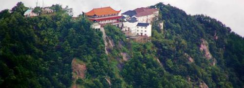
天柱山
Mount Tianzhu
洞 天 福 地
在名山聚集的安徽，天柱山并不是“热门”。相反，她还有些冷清、安静，据说几乎无人打扰。但实际上，天柱山的美却是可以和黄山媲美的，而且山路险陡，具有“擎天一柱，万岳归宗”的豪迈。
天柱山在长江北岸，安徽省境内，因主峰海拔有1488.8米，高耸挺立，如巨柱擎天，因此得名。天柱山上有山峰42座，其中苍松、翠竹遍布，怪石、奇洞、飞瀑、深潭无奇不有。
山上俯瞰炼丹湖。
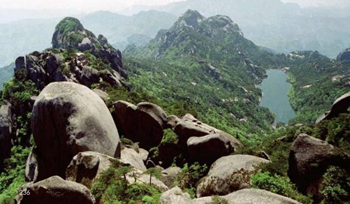
或许正是由于天柱山的多而奇，才受到道家和佛家的喜爱。在古老的道家文化中，曾在中国的奇山绿水中，总结了36洞天、72福地，而天柱山就名列为第14洞天、57福地。而佛家的禅宗也与天柱山颇有渊源，据说禅宗达摩祖师后，禅宗二祖、三祖都曾在天柱山修行，在南北朝时，天柱山山谷寺僧众甚多，俨为四海名刹。
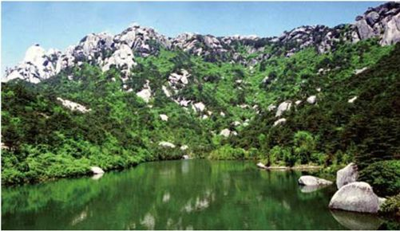
青翠欲滴的炼丹湖近景。
天柱山的路几乎都是石的。那些石阶穿行于各峰之间，转转折折，常常带给人一种“山重水复疑无路，柳暗花明又一村”的喜悦。
在天柱山最险的一段路，是被称做“青龙背”的一段山脊。磅礴的大山到这里仿佛被刀削过一般，由底部向上急速收拢，只留下一条极窄的山脊，供人通过。据说，这条山脊如蛟龙翻腾于云海山峦之间一般，是运动的。走在龙背上的人，无不飘摇欲坠，只有紧紧抓住两边低不及腰的围栏，将重心稳住，才能勉强通过。当你终于战战兢兢地走到了龙脊的尽头，一抬眼：呵！仿佛整个世界都是从自己的脚下铺展开去。远处山脉在地平线处与白云缠绕嬉戏，谷间乍现的小溪，轻如羽纱，轻轻挽于青山腰际，而面前那翻滚奔腾的云海，美丽无边……
这就是无与伦比的天柱山……
三祖寺
三祖寺是天柱山最著名的景点，距南大门野人寨不远。这座寺庙建于南朝，今仅存藏经楼、偏房数间和屹立于寺前的觉寂塔。由于寺周风景旖旎，文人墨客曾多次来此游览，留下了很多人文景观。如寺西山谷中，就有“山谷流泉”和“石牛古洞”的景观。相传，北宋黄庭坚曾坐石牛之上读书，巨石上刻有黄庭坚诗和同时代大画家李公麟所绘的“山谷道人坐牛图”，至今仍清晰可见。
西递与宏村
Xidi & Hongcun
桃 花 源 里 人 家
提起徽州，人们不禁想起一片灰蓝的瓦顶，粉白的墙，拱形的门壁，还有那嵌在墙上的一扇扇精致的木窗。每当清晨拂晓，那蕙质兰心的徽州女子，轻轻地拎着一篓青菜，迎着斜斜地照在肩头的朝阳，向着那些院落走去……这就是那个如画般的地方，西递与宏村。

倒影在水中的古老民居
西递和宏村只是徽州两个名不见经传的小村落，但却有着“桃花源里人家”的美誉。
穿过西递村拱形门的村口，远远眺去，高低不一却又紧密相连的房子，全是白墙青瓦马头墙，布局工整，结构精巧。明清时，西递村民大多是经商之家，家资殷实，因此修建的房屋也都很讲究。尽管如今这些屋檐与青灰色的墙壁，已经经历了百年的风雨，但在半晦半明的晨阳中，仿佛依然散发着明清的色彩。
西递人说“雨雪是金银”，于是家家户户都设有天井、亭阁、小池，雨雪皆落在自家的庭院，所谓的“肥水不流外人田”或许就是如此。随便推开老宅的门，天井、院落便展现在眼前，而宽敞的厅内陈设也一目了然。在西递的街口，还有一户人家的门口向后缩进了半米，门额上刻着“做退一步想”。据说，这是因为当年贪官污吏很多，主人为后人做的警示。这就是西递，尽管曾经辉煌，如今静寂，但那些静悄悄地散发着生活气息的小院，依然上演着故事。岁月只是埋葬了过去的风华，却抹不去心中的记忆。
徽州民居
徽州建筑多为砖木结构的小楼，明代以楼上宽敞为特征，而清代以后多为一厅堂两卧室的三间屋或一厅堂三卧室的四合屋，而且厅堂为明，卧室为暗。大门上装饰有山水人物的石雕砖刻，门楼往往建成重檐飞角的样子，四周高筑防火墙，形成一个院落。徽州建筑有一屋多进的特点。一般说来，一个家族住在同一宅子，而一家住一进。平日里，中门关闭，各家独户过日子，等到祭祀时，中门打开，族人都从大门进出，以祭奠先人。
同为“画里乡村”，如果说西递给人的是一种厚重，那么，宏村给人的则是一种灵秀。远山在沉沉的雾霭中若隐若现，岸边的垂柳在轻轻的微风中摇摆，三两只鸭游弋，四五片蝶翻飞，炊烟袅袅，燕舞莺啼，这是西递所没有的轻盈。
宏村的轻盈来源于萦绕在村里的水。村中心的水塘名为南沼，水源引自后山之泉，泉水流经各巷，在这个偏僻的小村落里形成了小桥流水人家的特点。或许正是山水的滋润，才让宏村的木雕如此精美。据说，在村里曾经的首富之家的承志堂中，有一根精美绝伦的雕梁。雕梁上为了展现琴棋书画，竟然栩栩如生地雕刻出36个形态各异的人物，令人叹为观止。
行走于西递、宏村，始终有种莫名的感动，仿佛这里有一股地老天荒的气息，淘洗着人们心底的喧嚣与浮躁，它不断地提醒你，生命不是耗费和使用，而是享受……
村中的小桥。这里曾经是电影《卧虎藏龙》等的拍摄地。
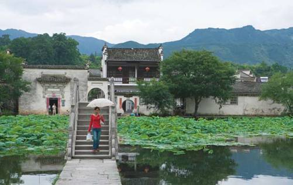
江西
Jiangxi·山水悠悠
江西的山雄伟博大，带着一股阳刚之气，江西的水清幽灵秀，有一股阴柔之美。流连于山谷，嬉戏在河边，看着那一幢幢古朴的老民居，以及旷野碧水上漂浮着的那几叶扁舟，一股余韵不绝的诗意顿然填满胸襟，不禁让人感叹，山水悠悠。
庐山
Mount Lushan
浪 漫 超 然
“日照香炉生紫烟，遥看瀑布挂前川，飞流直下三千尺，疑是银河落九天。”
——李白《望庐山瀑布》
庐山的瀑布是人们最热切的向往。庐山的瀑布，庐山的水，有一种独特的韵致，它们深藏在诸峰、山间，犹如一幕幕从天而降的玉帘，令人迷恋。在庐山的众多水中，三叠泉最为著名。
庐山云雾环绕，像中国画里的山水
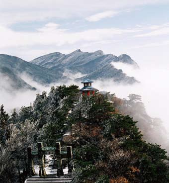
三叠泉毗邻含鄱口，要想看到“飞流直下”的美景，需要沿着入口的小径，跨过小溪，最后再走过五老峰下长达千级的台阶，才能看见瀑布的全貌。不过，即使走过如此长的路，也不会疲倦，你可以悠闲漫步。两边参天的大树，已将小径的天空遮盖得严严实实，让人不禁萌生一种“曲径通幽”的意境。行走于此，感受着林间凉爽的风，闻着扑鼻而来的泥土的清香，一身的疲倦不知不觉便已烟消云散。
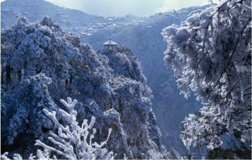
大雪覆盖中的庐山
当你终于走过千折百转的石阶，眼前豁然开朗，一道气势恢弘的瀑布热情地呈现在面前。只见一匹如玉的雪缎由山顶垂直而下，由远及近，由高而下，突然，半路突出的山石却将雪缎拦腰截成三段。巨大的水流冲击着岩石，飞溅着水珠，发出如雷的轰响，但山风却很温柔，夹杂着朦胧的水汽，轻轻抚着周围的人，湿湿的，凉凉的。而那巨大的水流，经过温柔山风的感化，最终也温温柔柔地落入了一潭清澈见底的水。
那一潭碧油油的绿水，又是那样的清澈，那样的可爱。那些从天而降的水珠仿佛是活泼的、调皮的孩童，在潭面母亲上顽皮地激起一圈圈不知疲惫的涟漪。于是，汹涌的瀑布与静静的潭水，为人们奏响了一曲狂想与安静的交响曲。
来庐山，除了看别致的庐山水、优美的庐山景以外，还有一个地方非去不可。那里不仅有茵茵的青草，参天的古树，最重要的是曾经朗朗的读书声，以及千年书香的韵味，那里就是——白鹿洞书院。
白鹿洞书院，坐落在五老峰东南，在海会镇与星子县白鹿镇的交界处。千百年来，尽管它已地地道道地与庐山连在了一起，但却透露出与庐山截然不同的气息。
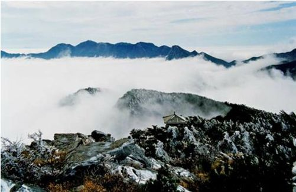
庐山五老峰。这里五座山峰挺立，雄伟陡峭，因而得名。
书院里的建筑气势恢弘，大殿重檐，灰瓦白墙，黑柱红拱，飞檐凌空，巍峨壮观，但因千百年来沉淀浓郁的文化气息，大殿显得庄重而典雅。穿过古旧的院门，礼圣殿便呈现在眼前，它是书院现存最大、规格最高的古建筑。殿额上有康熙帝亲手书写的“万世师表”匾额，殿正中有孔子行教图石刻像，像下的石台上正摆着石香炉和石花瓶，其间香烟萦绕，更添几分庄重、几分虔诚。
转过礼圣殿，进入明伦堂。明伦堂是白鹿洞书院的讲堂，是一个砖木结构的，拥有白墙灰瓦的殿堂，有着丰富的学堂气息。堂内陈列着仿古的桌椅、讲台、戒尺，四周挂满了或端庄、或苍劲、或龙飞凤舞的对联，让人不禁想起曾经先生“上课”，台下学生萧然，然后琅琅读书的情景。白鹿洞的历史中，到底会沉淀了多少闪光的思想，多少大浪淘沙后的文化，才孕育了今天文明的辉煌啊！
三清山
Mount Sanqing
天 下 无 双 福 地
还记得，在《西游记》中车迟国时，群妖大修三清观，却不料让孙悟空蒙混过关，享用了一次鲜果盛宴。殊不知，在江西那片深远的土地上，也有一座三清山，也与孙悟空的本源——道教，有着千丝万缕的联系。而且那山、那景依然诉说着古老的故事。
据史书记载，三清山之所以能名垂千古，与道教的兴衰有密切的关系。东晋时，一位叫葛洪的炼丹术士与当朝户部供职的李尚书，听说三清山曾有金光紫云出现，是元始天尊、灵宝天尊、道德天尊三清的列坐处，便相约一起在三清山结庐而居，炼丹修身。据说当时，往来求仙问药者络绎不绝。从此，葛洪就被尊为三清山的开山始祖，而三清山的山名也盛传于世。
岁月流逝，如今，当年葛洪所掘的丹井和炼丹炉的遗迹依然历历在目，那口丹井，经历了1000多年的风霜荣辱，仍然像从前一样，终年不涸，而且井水充盈、甘甜。只是，曾经那座人声鼎沸的三清宫，如今是真正到了“殿由风扫，门被云封”的境地，看上去是那么的寂寞简陋。
或许三清山真有些“仙风道骨”，尽管如今那山、那景到处充斥着行人的喧闹，却依然有一份寂寞。或许正是这寂寞，才是三清人喜欢的。毕竟，在他们的心中，人间的一切，能与天地融为一体才好。
呵，重写一个综述吧，“三清”这个词不是很少见，道家常用的，很多地方都有三清观。用《西游记》来举例，似乎有点显得大惊小怪了。
三清山怪石嶙峋，奇峰险峻。
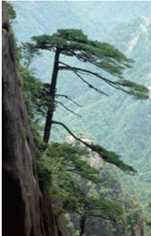
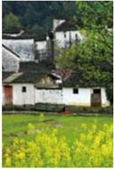
油菜花中的古老房屋，显出时光的印记。
婺源
Wuyuan
淡 淡 情 怀
走进婺源，给人的就是这种细细的，斩不断、理还乱的感觉。春天的田野上，漫山遍野的油菜花在竞相开放，呼吸着清新的空气，思念就像荒滩上的野草，一阵疯长。
恐怕有很多人都觉得，灰瓦白墙，流水小桥，还有穿着蓝布衣裳的姑娘，是江南永远的色彩，但来到婺源你会发现，原来江南还有春天满山遍野的金黄，夏日午后的粉墙黛瓦，秋日凉凉的青石板路。婺源，原来是江南美丽村落的总称。
春季到婺源，你会置身于一片金色的海洋中，你的眼睛所到之处，鼻子所闻的气味，都是油菜花。只见远处的小山，近处的村落都在油菜花的笼罩下，五彩的蝴蝶翩翩飞舞，闭着眼睛吸一口，湿润润、甜丝丝的感觉瞬间便充满了心间。在这片金色的海洋中，也偶尔点缀着些许粉红色的桃花、素洁的梨花，使得那大片大片的黄，显得是那么调皮、活泼。
油菜花开时，月亮湾的美丽风光。
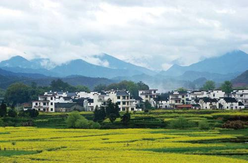
如果说春天的婺源是欢快的，被一片黄色的海洋掀起了喧闹的浪潮，那么夏天的婺源就是安静的、诗意的。早晨，行走于这氤氲的古村，看着一块块高低层叠着的梯田，闻着嫩绿的水稻散发的特有的香气，不禁让人心旷神怡。而拥有白墙青瓦的村庄，静静地躺在这块宝地上，村中如镜般的河水，温婉而舒缓地流淌着，说不出的静谧、安详。村中小路两旁的古树上，鸟儿们正以清脆的声音歌唱着。
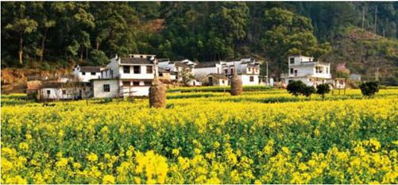
婺源江岭。这里是婺源很有代表性的旅游的地方。
太阳渐渐升起，炊烟、狗吠，还有早起的女人喊孩子、男人起床的声音，让这个小村显得逐渐繁忙起来。跟着牵着水牛悠闲漫行的老人，踏着田埂上浓浓的露珠，尽管鞋子和裤腿早已被蘸染湿透，但心却如早上初升的太阳，那么舒服，充满着希望。远处，早已有水牛在悠闲地吃草，偶尔有人走近，它转过头望一眼，然后又低头继续吃草。
当阳光终于跳脱了地平线，从白墙灰瓦的房顶上越过时，小村经历了一早的沸腾，又恢复了宁静。人们吃完早饭，或到田地里看看禾苗，或聚在村口的老树下低声聊着张家长李家短，看着日日成长的孩子，人间最美的日子也不过如此了吧。
婺源几乎没有秋季，无论是北风，还是寒冷，似乎都无法到达这里，但那万里的晴空却泄露了季节的秘密。在一个秋后的早晨来婺源，你一定会被这里的宗祠、老屋吸引。据介绍，自明代起，婺源的江湾就群贤辈出，孕育了一大批学士名流。为了当初的纪念，或者曾经的显赫，一座座颇有韵味的宗堂、老屋、亭阁、石桥、坝井相应而起。如今村中保存着三省堂、敦崇堂、培心堂、滕家老屋，以及江永纪念、南关亭、东和门、徒戎桥、水坝井等古风古韵的徽派建筑。
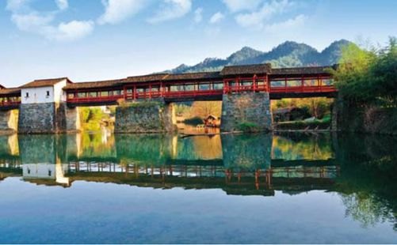
婺源的彩虹桥，倒影在桥下的水中，美丽非常。
当然，其中最引人注目的便是萧江宗祠。萧江宗祠，又称永思祠，据说是大汉朝萧何的后裔。在《萧江全谱》中记载，北宋神宗元丰二年（1079年），有避难的萧氏一族迁到江湾，因纪念先世是从北方渡江而来的，便改萧姓为江氏。谁知道，从萧姓改江姓的“萧江”子孙竟繁衍成了江湾的巨族，便于明代建造了这座江南七十座著名宗祠中“最好的一座宗祠”。不过，它的存在经历了风与火的洗礼，虽然现在依然恢复了以往精美的模样，但难免流于现代的精美，缺乏了一种历史沉淀的古韵。
婺源小吃——糊豆腐
糊豆腐是婺源小吃的代表。人们将豆腐切成豆粒大小，倒进专门用猪大骨熬成的高汤里，加上特有的调料焖三五分钟后，再浇上熟猪油，放一些虾仁、肉蓉、香菇丁和笋尖，不停地搅拌，并散入适量的米粉。待糊豆腐快熟的时候，再放入些许猪油、碎香菜和湿淀粉，搅匀，舀到盘里，浇上麻油，撒些胡椒粉和葱花即成。据说用婺源的水做成的糊豆腐味道鲜而清，具有别地品尝不到的独特口味。
婺源的冬天则是湿润的，就像一幅水墨画，分不清飘在空气中的，到底是雨还是雾。碧水清清，在村前汇合，古树相望，绕在村前村后，而那个让人心心相念的古村，竟也黑白分明，仿佛那山那水都是为了这个小村落而存在的。
而事实上，也正是如此。正是由于那山那水，深深地让徽州人着了迷，所以才创造出如此美丽的地方。